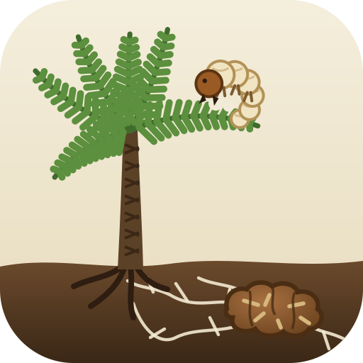

AI-assisted web reference: still mopping up the slop. Built with help from AI and has not been thoroughly inspected for accuracy. Please trust the cited papers over this page, and tell me if you spot a mistake.

Who ate, bored, infected, sheltered in, grew on or lived beside the plants of the fossilized past? Explore the network below to follow each interaction from a plant to the animals, fungi and neighbours that lived with it, period by period and from floodplain to shelf. Every line is a published record you can open.
A companion to Sporae Dispersae, by Stephen C. Caird.
Who ate, bored, parasitised, encrusted or sheltered with whom, from the open shelf through tidal margins and estuaries to rivers, lakes, mires and dry land. Each card is one documented interaction; its left edge shows the strength of evidence: green for direct (gut contents, matched bite marks, contents in coprolites), olive for a trace with a known maker, amber for a trace or association with the maker inferred, grey for inference from morphology or living relatives.
Zones are as the sources describe the setting; each record says why it was placed there. Compiled 23 November 2026; records marked not verified need checking against the original paper. Plant–arthropod interactions in peat and coal balls are in the network itself (categories Feeding damage, Borings, Coprolite contents).
Was the peat that became each coal laid down in fresh, brackish or sea-influenced water, and why do authors think so? Each coal lists its place in the succession first, then every line of evidence and which way it points. Where authors disagree, both sides are given.
Salinity categories for the organisms on this page, with the evidence behind each. A taxon found in a bed is only as good a salinity indicator as its own tolerance.
How to read a Pennsylvanian coal-swamp spore count as vegetation and peat-surface conditions. Moved here from the guide "Pennsylvanian Miospores and Their Parent Plants" (October 2026), with its genus names brought up to date against Vann Smith's guide. Photographs and identification tables for every genus are on Sporae Dispersae and Plants Through Time.
| Grade | What it means |
|---|---|
| In situ | Spores taken from the cones, sporangia or synangia of a named plant. The strongest evidence. Bek (2017) compiles every Paleozoic lycopsid record; Balme (1995) covers all groups. |
| Coal-ball association | The spore type is consistently abundant where its candidate plant dominates coal-ball peat from the same seam (Phillips et al. 1985; DiMichele & Phillips 1994). |
| Form-generic | The genus is defined by a simple shape that unrelated plants produced. The group named is the usual assignment, not a firm link. |
Species can matter more than genus. Lycospora is the clearest case: different species come from different lepidodendralean trees with different habitats (DiMichele et al. 1996).
| Spore taxon | Parent plant | Evidence | Habitat of the parent |
|---|---|---|---|
| Arborescent lycopsids (Lepidodendrales). Monocarpic trees (Lepidophloios, Lepidodendron, Synchysidendron) of wet, nutrient-poor, often disturbed swamps, with opportunistic, colonising life histories (DiMichele et al. 1996; DiMichele & Phillips 1994). | |||
| Lycospora granulata | Lepidophloios hallii | In situ (Willard 1989) | Highly specialised wetland tree; dominates many coal-ball peats, on peat or organic-rich mud (DiMichele et al. 1996; Looy et al. 2014) |
| L. pellucida | Lepidophloios harcourtii | In situ | Peat-forming swamp tree |
| L. pusilla | Lepidodendron hickii | In situ | Near-channel, clastic settings; less common in coal balls |
| L. micropapillata, L. orbicula | Paralycopodites brevifolius | In situ | Patchy in peat; prolific spore output records it well (Bartram 1987, in DiMichele & Phillips 1994) |
| Granasporites medius (Vann Smith's guide notes Cappasporites as a possible synonym, after Eble 1996; Ravn 1986 merged them) | Diaphorodendron, Synchysidendron | In situ | Some species near channels; low spore output makes the plants hard to track |
| Cappasporites | Achlamydophyton varius microsporangiate cones (Balme 1995; Leisman & Phillips 1979) | In situ, in part | Arborescent-type lycopsid. Either way it counts with the arborescent group, not the small lycopsids |
| Crassispora kosankei (minute coni, not spines, per Vann Smith's guide) | Sigillaria (cones Mazocarpon) | In situ | Less waterlogged substrates than Lepidophloios; spores under-represent the trees |
| Cadiospora | Lepidodendrales | In situ, order level (Looy et al. 2014) | As for the group |
| Small and subarborescent lycopsids. Isoetaleans (Chaloneria, Polysporia), sporangiostrobaceans (Omphalophloios, Sporangiostrobus) and selaginellaleans. Most in situ spore types match a single dispersed taxon (Bek 2017). | |||
| Endosporites | Chaloneria, Polysporia | In situ (Balme 1995) | Reproduction seems to have needed a wet peat surface or standing water |
| Densosporites | Sporangiostrobus, Porostrobus, Omphalophloios | In situ (Balme 1995) | Long read as nutrient-poor ombrotrophic peat; DiMichele & Phillips (1994) say the evidence refutes that simple view |
| Radiizonates | Sporangiostrobus kansanensis | In situ (Balme 1995) | As for Densosporites |
| Cristatisporites | Sporangiostrobus feistmantelii; Isoetales | In situ | Small lycopsids of wet peat |
| Cirratriradites | Selaginellites suissei | In situ | Herbaceous ground layer |
| Cingulizonates | Lycopsid | Form-generic | Uncertain |
| Sphenopsids. Calamites (rhizomatous, resprouting after burial) and scrambling sphenophylls. Minor in peat; linked to disturbance and clastic influence. | |||
| Calamospora | Calamitean cones; also some Bowmanites and Discinites | In situ (Balme 1995) | Disturbed, clastic-influenced margins and channel sides |
| Laevigatosporites (larger species) | Calamites or sphenophylls | In situ in sphenophylls, marattialeans and Discinites | Mixed: see below |
| Vestispora (trilete) | Bowmanites and related sphenophyll cones | In situ | Scrambling understorey plants |
| Elaterites triferens | Calamitean cones (11 species) | In situ | As for calamites |
| Marattialean tree ferns (Psaroniaceae). Cheap to build, fast-growing, prolific; dominant after the Middle–Late Pennsylvanian lycopsid decline. | |||
| Thymospora | Scolecopteris parkerensis, S. vallumii | In situ (Lesnikowska & Willard 1997; Millay 1979) | Tree-fern stands on peat |
| Torispora securis, Laevigatosporites globosus | Scolecopteris dispora (outer and inner spores of one synangium) | In situ (Lesnikowska & Willard 1997) | As above |
| Punctatisporites minutus | Psaronius | Mixed: marattialeans, zygopterids and others (Balme 1995) | As above |
| Punctatosporites, Latosporites, Cyclogranisporites (in part) | Marattialeans | In situ (Balme 1995; Bek 2021) | As above |
| Small ferns. Ground cover, climbers, epiphytes and pioneers. Genera are largely form-generic; Leiotriletes is at least partly Deltoidospora. | |||
| Triquitrites | Only Szea sinensis (Permian, China) | No Pennsylvanian in situ record | "Small fern" rests on convention |
| Raistrickia, Lophotriletes, Granulatisporites, Microreticulatisporites, Camptotriletes, Leiotriletes | Botryopteris, Senftenbergia, Renaultia, Ankyropteris and other small ferns | In situ (Balme 1995) | Small ferns |
| Verrucosisporites, Convolutispora | Ferns, plus medullosan or seed-fern organs | Mixed | Mostly ferns |
| Reinschospora, Savitrisporites, Waltzispora | None known | No in situ record | Affinity unknown |
| Cordaites and conifers. Pollen, not spores. | |||
| Florinites | Cordaitanthus pollen cones | In situ (Balme 1995) | Broad tolerance; abundance alone cannot show seasonal dryness (Looy et al. 2014) |
| Potonieisporites | Walchian conifers | In situ (Balme 1995) | Seasonally dry habitats |
| Pityosporites, Platysaccus, Illinites | Conifers and other gymnosperms | Form-generic | Often extra-basinal, blown in |
| Pteridosperms. | |||
| Monoletes (Vann Smith's guide gives Zonalosporites as the senior name; Schopfipollenites is a junior synonym) | Medullosans (Dolerotheca and related pollen organs) | In situ (Balme 1995) | Large prepollen, strongly under-represented |
| Lyginopterid prepollen | Lyginopterids | Hidden among trilete form-genera | Cannot be separated in counts |
| Spore signal | Parent plants | Usual reading |
|---|---|---|
| Lycospora, especially L. granulata | Lepidophloios and other lepidodendraleans | Wet, nutrient-poor peat with standing water; mire interior |
| L. pusilla, Granasporites | Lepidodendron, Diaphorodendron, Synchysidendron | Near-channel or clastic-influenced swamp |
| Crassispora | Sigillaria | Less waterlogged substrates (under-represented) |
| Endosporites | Chaloneria, Polysporia | Very wet surface or shallow standing water |
| Densosporites, Radiizonates | Omphalophloios, Sporangiostrobus | A distinct peat phase; once read as ombrotrophic, now contested |
| Tree-fern spores | Psaronius | Better-drained, disturbed or richer peat; thick-walled forms may be blown in |
| Small-fern spores | Ground-cover and pioneer ferns | Disturbance, open surfaces |
| Calamospora, larger Laevigatosporites | Calamites, sphenophylls | Clastic influence, channel margins |
| Florinites | Cordaites | Broad; often read as drier or more varied surfaces |
| Monoletes | Medullosans | Present but nearly invisible in the counts |
A working framework, not a rule: every group had a range, and the biases below distort the proportions.
The three mire phases read as: (1) a tree fern–cordaite peat with notable sphenopsids, perhaps on better-drained or more varied surfaces, with cordaite pollen near 20% in the basal samples; (2) a tree fern–small fern phase with a disturbance-prone character, its small-fern pulse in intervals 4–7 ending abruptly at 8C; (3) a stable Lycospora-dominated mire interior that loses taxa without replacement. Moving Cappasporites (about 4.6% of counts) to the arborescent lycopsids makes the small-lycopsid curve smaller and more reliable. Coal-ball data from the same seam would be the decisive test of how much of the shift is vegetation and how much is spore production.
Balme 1995 (Rev. Palaeobot. Palynol. 87: 81–323); Bek 2017 (Palaeontographica B 296: 1–111); Bek 2021 (Rev. Palaeobot. Palynol. 284: 104341); Bek & Pšenička 2001 (Rev. Palaeobot. Palynol. 116: 213–232); DiMichele, Eble & Chaney 1996 (Int. J. Coal Geol. 31: 249–276); DiMichele & Phillips 1994 (Palaeo3 106: 39–90); Lesnikowska & Willard 1997 (Rev. Palaeobot. Palynol.); Looy et al. 2014 (PeerJ 2: e630); Phillips, Peppers & DiMichele 1985 (Int. J. Coal Geol. 5: 43–109); Ravn 1986 (Iowa Geol. Surv. Tech. Pap. 7); Smith 1962 (Proc. Yorks. Geol. Soc. 33: 423–474); Thomas 2021 (Fossil Imprint 77: 11–16); Willard 1989 (Am. J. Bot. 76: 820–827); Vann Smith, Devonian–Carboniferous spore guide (2025) for the name updates. Volumes and pages for the last five were not re-checked when this section moved.
A root is younger than whatever it grows through, so root penetration orders plants in time, like a dike cutting older rock. Counts are penetration events in one coal-ball census; arrows run from the rooting group to the group whose remains it penetrated.
Score = (times it penetrated others − times others penetrated it) ÷ total. +1 means it only ever rooted through others.
Seat clays, roof shales, partings and the modern peat analogues are in the network: switch on the Modern chip and the Root penetration category.
Sites of exceptional preservation (Konservat-Lagerstätten) as snapshots: the spores and pollen described from each, beside the animals found with them. "Described" means a published palynoflora; "limited" means scattered or in situ records only.
Where authors read the same evidence differently. Each position names its evidence: a body fossil or gut contents, or an inference from size, shape or analogy.
Studies that count damage, tissues or coprolites across hosts or sites, and whether their data tables can be reached.
Fossil droppings that hold plants, from the Silurian to the last Ice Age: size, shape, what they contain and who might have made them. Rows marked "see paper" are summarised from the network's records; the rest give sizes and shapes from the papers. Images are linked, not shown here; most plates are under publisher copyright.
Papers the research pass could not read in full or that would settle open questions, each with what to look for.